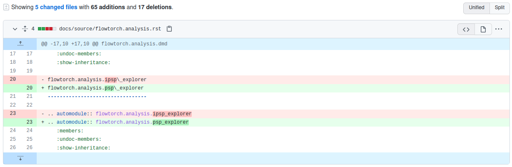
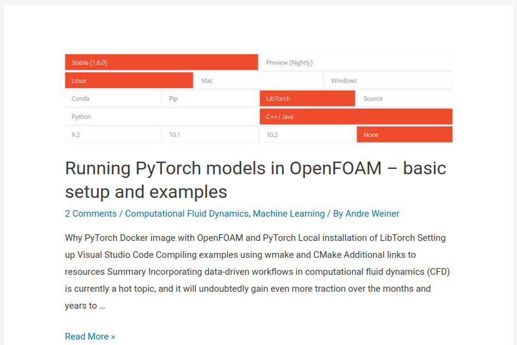
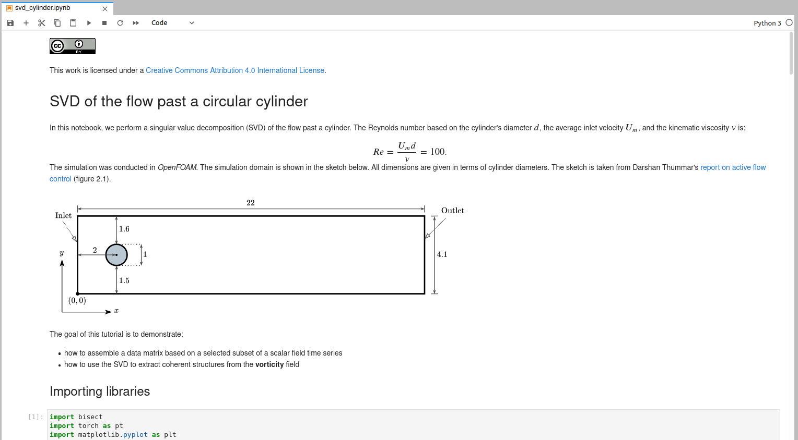
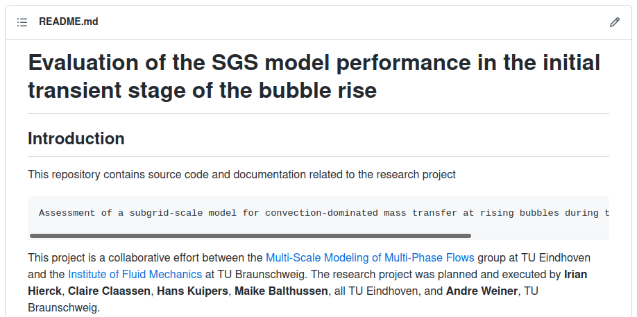

Make your research efforts last
Andre Weiner
TU Braunschweig, ISM, Flow Modeling and Control Group

These slides and most of the linked resources are licensed under a
Creative Commons Attribution 4.0 International License.
Outline
- Why should you care?
- Problems and tools
- Really, I haven't changed anything ...
- It only works on the Windows XP PC in the lab ...
- It must be somewhere on one of the hard drives ...
- We have done that years ago ...
- A practical example
Before we start ...
- only software and data related part of research
- no in-depth introduction to specific tools
Why should you care about the documentation and reproducibility of your work?
sustainability
we have to preserve what we learn
productivity
small initial overhead - great long term benefits
quality
[...] a person explains the concept they're learning [to themselves] in a simple way to find gaps in their knowledge. Feynman technique, source
visibility
for your group, your field, and yourself
Legal requirements
research proposals expect a management plan
Moral aspects
public money - public data/code/results
Helping others makes you happy!
If you want happiness for an hour, take a nap. If you want happiness for a day, go fishing. If you want happiness for a year, inherit a fortune. If you want happiness for a lifetime, help somebody. - chinese saying, source
Problems and tools
Really, I haven't changed anything ...
me trying to justify why the simulation results look different now
What is the topic of this section?
- isolating dependencies
- publishing research
- version control
- archiving data
Version control - keeping track of changes
Git is a software for tracking changes in any set of files [...] - source
What files should be version-controlled with Git?
- any kind of file
- only source code
- any human-readable file
- mostly binaries
main Git commands
- git init - create new repo
- git add - stage changes
- git commit - finalize changes
- git reset --hard - undo all changes
- git checkout -b try_crazy_idea - branching
- git diff - compare two commits
Github/Bitbucket/Gitlab for collaboration
It only works on the Windows XP PC in the lab ...
admin explaining why we have to use a 15 years old version of software XYZ
What is the topic of this section?
- isolating dependencies
- publishing research
- version control
- archiving data
isolating dependencies
What actually happens when you run a program?
- binary gets loaded into RAM
- instructions get executed
- other binaries get loaded into RAM - shared object libraries (.so files on Linux) or dynamically linked libraries (.dll files on Windows)
Potential problems
- binary changes
- libraries change (name, location, version)
- dependency conflicts
- discontinued support for programs/libraries
If you open gedit, how many .so files are involved?
- 0
- 10
- 40
- 80
ldd $(which gedit)
...
libgedit-3.36.so => /usr/lib/x86_64-linux-gnu/gedit/libgedit-3.36.so (0x00007f5bbb47f000)
libgobject-2.0.so.0 => /lib/x86_64-linux-gnu/libgobject-2.0.so.0 (0x00007f5bbb3ec000)
libgio-2.0.so.0 => /lib/x86_64-linux-gnu/libgio-2.0.so.0 (0x00007f5bbb20b000)
libtepl-4.so.0 => /lib/x86_64-linux-gnu/libtepl-4.so.0 (0x00007f5bbb1d1000)
libc.so.6 => /lib/x86_64-linux-gnu/libc.so.6 (0x00007f5bbafdf000)
libglib-2.0.so.0 => /lib/x86_64-linux-gnu/libglib-2.0.so.0 (0x00007f5bbaeb4000)
libgtk-3.so.0 => /lib/x86_64-linux-gnu/libgtk-3.so.0 (0x00007f5bba703000)
libgdk-3.so.0 => /lib/x86_64-linux-gnu/libgdk-3.so.0 (0x00007f5bba5fe000)
...
Solution: software containers - Docker and Singularity
FROM ubuntu:20.04
# avoid time zone configuration by tzdata
ARG DEBIAN_FRONTEND=noninteractive
# install basic utilities
RUN apt-get update && apt-get install --no-install-recommends -y \
cmake \
g++ \
make \
...
# add openfoam-plus repository
RUN wget -q -O - https://dl.openfoam.com/add-debian-repo.sh | bash
# install OpenFOAM via Debian package
ARG FOAM_PATH=/usr/lib/openfoam/openfoam2106
RUN apt-get update && apt-get install --no-install-recommends -y \
openfoam2106-default
Example: OpenFOAM Dockerfile.
Working with containers
# build Docker container
docker build -t of2106 -f Dockerfile .
# build Singularity container from Docker image
sudo singularity build of2106.sif docker://of2106
# start interactive shell
singularity shell of2106
# now from inside the container
simpleFoam -help
miscellaneous details
- containers are no virtual machines
- practically no computational overhead
- for HPC: use Singularity
- no dependency conflicts
- sharing containers is easy
- images for Matlab & co available
It must be somewhere on one of the hard drives ...
your supervisor when asked for the data of former students
What is the topic of this section?
- isolating dependencies
- publishing research
- version control
- archiving data
Archiving data
If possible, archive important data online because ...
- it is easier to share
- it is usually backed up
- you are forced to think carefully which data to archive
- (usually) you are forced to describe the data
blob store - before the data is final
- think Dropbox, Google Drive
- ~100GB - TUBS Powerfolder
- ~20GB - B2DROP
long term storage - once the data is final
- datasets get a DOI (unique identifier)
- B2SHARE ~20GB per record
- TUBS library ???
We have done that years ago ...
senior researcher at project meeting
Where are data/code/results/documents? Why have I never heard about it?
- ahh
- ughh
- mhhm
- uff
Publishing research
research articles
are the currency of academia but ...
... usefulness - time investment - ratio
is vanishingly small
$\rightarrow$ it should be only the final step
Blog posts
Jupyter labs
Github/Bitbucket/Gitlab repositories
A practical example
Overleaf = Git+Docker+online storage for collaborative writing of Latex documents